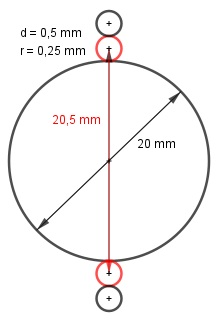

Aufgabe 85 a) Auf eine Rakete wirkt in 3 000 m Höhe 140 s lang ihre maximale Beschleunigung von 35 m/s2. Wie hoch ist ihre Endgeschwindigkeit, wenn sie in dieser Höhe eine Geschwindigkeit von 245 m/s hatte? b) Auf eine Spule von 50 mm Länge und einem Durchmesser von 20 mm werden 15 Lagen Kupferdraht mit einem Durchmesser von 0,5 mm gewickelt. b1) Welchen Durchmesser d hat die gewickelte Spule? b2) Wieviel Draht braucht man? a) 35 m/s2 bedeutet, die Geschwindigkeit nimmt pro Sekunde um 35 m/s zu. a1 = 245 m/s n = 141 d = 35 m/s a141 = 245 + (141 - 1) * 35 = 5 145 m/s b) b1) Der Außendurchmesser nimmt pro Wicklung um 2 * 0,5 mm zu. (siehe Bild) d = 20 mm + 2 * 15 * 0,5 mm = 35 mm b2) Für den Umfang a1 der 1. Wicklung gilt:

a1 = (20mm + 2 * 0,25) * π = 20,5 * π mm Für den Umfang der 2. Wicklung gilt: a2 = (20,5 mm + 2 * 0,5 mm) * π = 21,5 * π mm d = 1 mm n = 15 a15 = [20,5 + (15 - 1) * 1] * π = 34,5 * π mm Für die Länge einer Wicklung gilt: 15 s15 = ---- * (20,5 + 34,5) * π = 1 295 mm = 2 s15 = 1,295 m Auf die Spule passen 50 mm : 0,5 mm = 100 Wicklungen. Drahtlänge = 1,295 m * 100 = 129,5 m